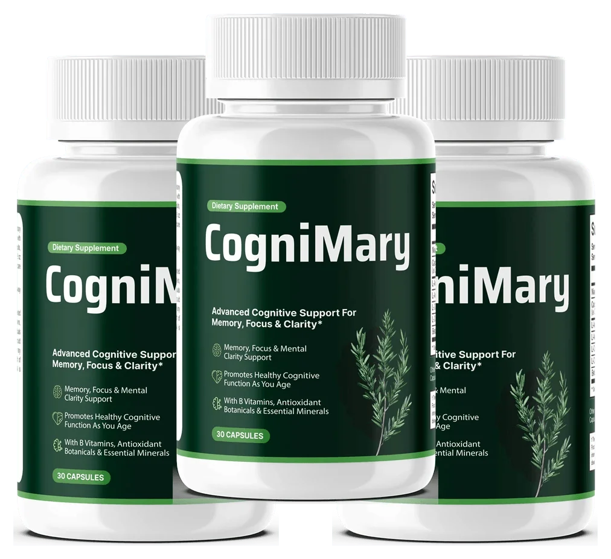
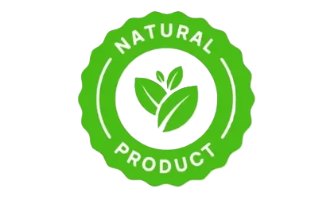
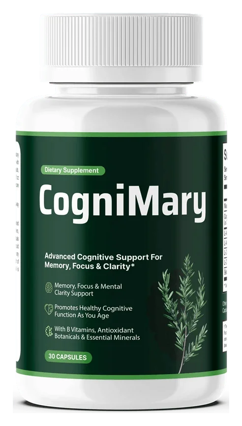
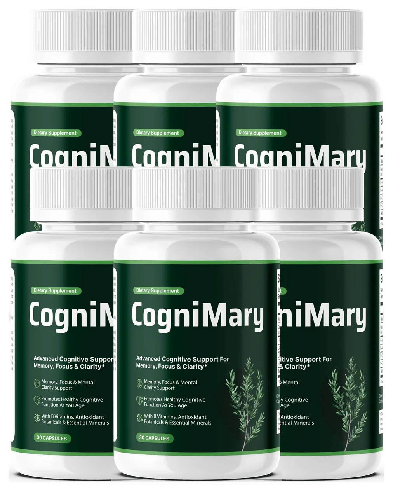

Cognimary®: Six Ingredients for Memory, Focus & Everyday Mental Clarity
Cognimary is a once-daily cognitive support capsule for adults who want proactive brain health — combining Bacopa Monnieri, Ginkgo Biloba, Phosphatidylserine, N-Acetyl L-Carnitine, Alpha Lipoic Acid, and Vitamin B12 to support memory, focus, and mental clarity without stimulants.
Cognimary is a non-stimulant, once-daily capsule formulated to support cognitive wellness through three pathways: neurotransmitter support, healthy circulation, and antioxidant protection. Pricing runs $49–$79 per bottle, every order is covered by a 60-day money-back guarantee.
60-day money-back guarantee Free US shipping on 3+ bottles Secure official checkout
Today from $49/bottle (reg. $79) — 6-bottle bundle saves most

Made In The USA
FDA-Registered Facility
GMP Certified

Naturally Sourced
Is Cognimary Actually Right For You?
Check the boxes below that sound like your typical week. Be honest — nobody else is looking at your screen.
If you checked 2 or more boxes: Your daily routine is missing the foundational nutrients your brain needs for circulation and cellular energy. The 6-bottle bundle is designed specifically to address this over a 90-to-180 day window.
See The 6-Bottle BundleWhat Is Cognimary?
A once-daily capsule for adults who want to support memory, focus, and mental clarity as part of a healthy lifestyle. Six individually named ingredients work across three connected pathways — neurotransmitter support, circulation, and antioxidant defense.
Six Named Ingredients
Every ingredient is named individually — no proprietary blend hiding the contents. Bacopa, Ginkgo, Phosphatidylserine, N-Acetyl L-Carnitine, Alpha Lipoic Acid, and Vitamin B12.
Three Connected Pathways
The formula works across neurotransmitter support, healthy circulation, and antioxidant defense — contributing together to cognitive wellness and mental clarity.
A Gradual Approach
Like most cognitive supplements, any effect builds over weeks of consistent daily use — which is why multi-bottle packages exist and the 60-day guarantee matters.
Checkable Manufacturing
US manufacturing, FDA-registered facility, and GMP certification are the brand's stated production claims — verifiable through standard regulatory databases.
Six Ingredients, Three Connected Pathways
Rather than one narrow mechanism, the brand connects neurotransmitter support, circulation, and antioxidant defense as contributing together to memory, focus, and everyday mental clarity.
Neurotransmitter Support
Bacopa Monnieri and Phosphatidylserine support neurotransmitter function and cell membrane health — foundational for memory formation and cognitive processing speed.
Circulation Support
Ginkgo Biloba and N-Acetyl L-Carnitine support healthy blood flow to the brain, helping oxygen and nutrients reach brain cells more efficiently throughout the day.
Antioxidant Defense
Alpha Lipoic Acid and Vitamin B12 help the body manage everyday oxidative stress and support cellular energy production — protecting brain cells from cumulative damage.
Supporting the bigger picture: the brand connects these three pathways as contributing to cognitive wellness and mental clarity. As with any nutritional supplement, the honest expectation is gradual support over weeks of consistent use — not an overnight change.
All Six Ingredients, Named And Layered
Every ingredient is named individually — no proprietary blend. Each carries a pathway tag and, where relevant, an interaction caution worth knowing before you order.
Bacopa Monnieri Extract
A traditional Ayurvedic botanical studied for memory support and cognitive processing. Bacopa has been used for centuries in traditional medicine systems and is now the subject of modern clinical research.
May interact with thyroid medication — check first if you take thyroid hormone replacement.
Ginkgo Biloba Extract
One of the most studied botanicals for cognitive support, Ginkgo is traditionally associated with healthy circulation and blood flow to the brain.
Can affect bleeding — check first if you take blood thinners or have surgery scheduled.
Phosphatidylserine
A phospholipid that's a key component of cell membranes, particularly abundant in brain cells. It supports cell membrane health and neurotransmitter function.
N-Acetyl L-Carnitine
An amino acid derivative that supports cellular energy production and healthy circulation. It plays a role in mitochondrial function and energy metabolism.
Alpha Lipoic Acid
A powerful antioxidant that helps the body manage oxidative stress and supports healthy cellular function throughout the nervous system.
Can affect blood sugar — worth noting if you manage diabetes.
Vitamin B12 (as Methylcobalamin)
An essential B-vitamin involved in nerve health, energy metabolism, and cellular function. The methylcobalamin form is the active, bioavailable form of B12.
Transparency note: the brand names all six ingredients but does not publish per-capsule milligram amounts for most of them on the pages we reviewed. Photograph the Supplement Facts panel when your bottle arrives and compare it with the page you ordered from.
Check Your Medication List First
Several ingredients in this formula carry documented interaction considerations. Find your situation below — this is a trust check, not medical advice.
Ginkgo Biloba may affect bleeding. Combine only with professional guidance.
Alpha Lipoic Acid may affect blood sugar. Monitor more closely and tell your prescriber.
Bacopa Monnieri may interact with thyroid hormone. Worth a pharmacist conversation before ordering.
Interaction risk drops considerably. The honest question is whether a once-daily cognitive capsule fits your routine — and the 60-day window lets you find out.
Not a treatment: Cognimary is a general wellness supplement. It cannot treat Alzheimer's, dementia, ADHD, or any diagnosed cognitive condition — those require medical assessment and evidence-based treatment.
Ten Things Cognimary Has Going For It
- Every ingredient named individually — no proprietary blend
- Bacopa Monnieri included — one of the most studied cognitive botanicals
- Ginkgo Biloba — decades of research behind it
- Phosphatidylserine for cell membrane health
- N-Acetyl L-Carnitine for cellular energy
- Alpha Lipoic Acid for antioxidant support
- Methylcobalamin B12 — the active form
- Simple once-daily routine
- 60-day money-back guarantee
- Facility claims (USA, FDA-registered, GMP) are checkable
Cognimary vs. Typical Cognitive Support Supplements
Not every brain health product on the market is built the same way. Here's how Cognimary stacks up against typical over-the-counter options.
| Feature | Cognimary | Typical OTC Products |
|---|---|---|
| Once-daily, simple dosing | ✓ | ✗ |
| All six ingredients named individually | ✓ | ✗ (proprietary blends) |
| Bacopa + Ginkgo combination | ✓ | Varies |
| Phosphatidylserine included | ✓ | Rarely |
| Stimulant-free formula | ✓ | Varies |
| Manufactured in an FDA-registered US facility | ✓ | Varies |
| 60-day money-back guarantee | ✓ | ✗ |
Choose Your Cognimary Package
Per-bottle price drops on larger bundles — and since any effect builds over weeks, the 3- and 6-bottle packages give the formula a fair trial window.
4.8/5 from 2,847 verified customers · 40,000+ adults nationwide
1 Bottles
30-Day Supply

Total: $158 + shipping
≈ $2.63 per day
- 1 bottles of Cognimary
- 30-day money-back guarantee
- One-time purchase, no rebill
3 Bottles
90-Day Supply
Total: $207 · Free US Shipping
≈ $2.30 per day
- Free US shipping
- 90-day trial — the fair-window pick
- 60-day money-back guarantee
6 Bottles
180-Day Supply

Total: $294 · Free US Shipping
≈ $1.63 per day
- Lowest price per bottle
- Free US shipping
- 2 free wellness bonus guides
- 60-day money-back guarantee
Official encrypted checkout — one-time purchase, no subscription, no hidden rebill.
Trackable US courier delivery, typically 5–7 business days to your door.
Not happy? Contact support within 60 days of purchase for a full refund.
Try Cognimary Completely Risk-Free
Cognimary is sold with a 60-day money-back guarantee, per the brand's stated terms. If you're not satisfied with your results within 60 days of your purchase, contact the seller within that window to request a refund. Calendar your refund deadline the day your order arrives so you never lose track of it.
What Cognimary Customers Are Saying
Individual experiences and opinions — not guaranteed outcomes or a scientific sample.
"I'm 62 and noticed I was forgetting names more often. After about six weeks on Cognimary, I feel sharper during conversations. My wife even commented that I seem more present."
"What I appreciate is the simple once-a-day routine. No complicated timing, no multiple pills. Three months in and it's just part of my morning, like my multivitamin."
"I researched the ingredients before ordering — Bacopa and Ginkgo have real research behind them. It's reassuring to know exactly what I'm taking every day, not a vague 'proprietary blend'."
Testimonials reflect individual experiences and opinions. Results are not guaranteed and may vary. These statements have not been evaluated by the FDA.
Published Research Behind The Ingredients
These citations concern research on the individual ingredients at clinical doses, not a clinical trial of the finished Cognimary formula itself.
- Stough C, et al. "The chronic effects of an extract of Bacopa monniera on cognitive function in healthy human subjects." Psychopharmacology.
- Kennedy DO, et al. "Effects of Ginkgo biloba extract on cognitive performance and mood in healthy volunteers." Human Psychopharmacology.
- Kato-Kataoka A, et al. "Soybean-derived phosphatidylserine improves memory function of the elderly Japanese subjects with memory complaints." Journal of Clinical Biochemistry and Nutrition.
- Smeland VS, et al. "Chronic acetyl-L-carnitine alters skeletal muscle metabolism and improves exercise tolerance." Journal of Physiology.
Important context: These statements have not been evaluated by the FDA. Consult the full studies for specific clinical dosages and methodologies.
Frequently Asked Questions
Cognimary is a once-daily capsule combining six named ingredients — Bacopa Monnieri, Ginkgo Biloba, Phosphatidylserine, N-Acetyl L-Carnitine, Alpha Lipoic Acid, and Vitamin B12 — positioned to support memory, focus, and everyday mental clarity as part of a healthy lifestyle.
The formula combines six ingredients across neurotransmitter support, circulation, and antioxidant defense. Together, the brand positions these as supporting the body's everyday cognitive function, memory, and mental clarity — gradually, not instantly.
Not on the pages we reviewed. The brand names all six ingredients but does not publish per-capsule milligram amounts for most of them. Photograph the Supplement Facts panel on arrival and compare it with the page you ordered from.
Several ingredients carry documented interaction considerations: Ginkgo may affect bleeding, Alpha Lipoic Acid may affect blood sugar, and Bacopa may interact with thyroid medication. If you take blood thinners, diabetes medication, or thyroid medication, speak with your doctor before starting.
No. Cognimary is a general wellness supplement, not a treatment for any diagnosed condition. Diagnosed cognitive conditions require medical assessment and evidence-based treatment.
Like most cognitive supplements, any effect builds over weeks of consistent use. Many customers report noticing changes within 4–6 weeks, with support continuing to build over 60–90 days — which is why the 3- and 6-bottle packages exist.
The brand advertises a 60-day money-back guarantee from your purchase date. Contact the seller within that window to request a refund. Calendar day 60 (or earlier) the moment your order arrives.
Cognitive Wellness. Every Day.
Join thousands of adults who've made Cognimary part of their daily wellness routine — six named ingredients, one capsule, backed by a 60-day, no-questions-asked guarantee.
60-day money-back guarantee Free US shipping on 3+ bottles Secure official checkout
Regular: $79/bottle · Today from $49/bottle
See The Current Cognimary Offer